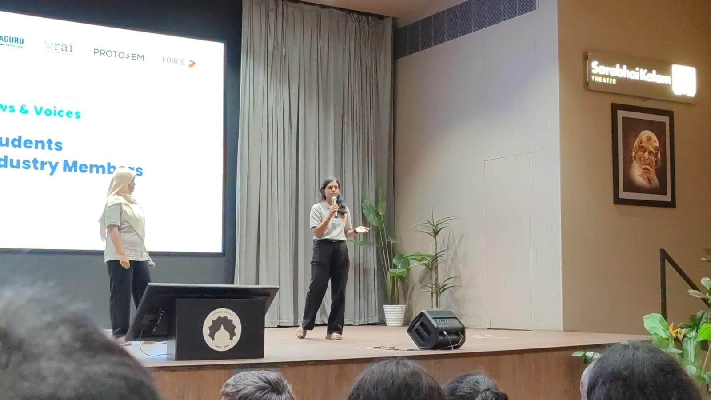
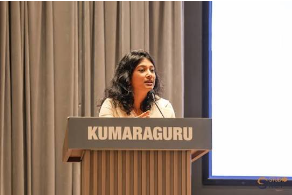

🏛️ What is PRICE PROTOSEM?
PRICE (Phygital Retail Intelligent Commerce & Entrepreneurship) Protosem is a semester-long, innovation-centric programme offered to students of various programmes across Arts, Engineering, and Technology from KCLAS, KCT, and KSI.
This is not just a cohort of students from different domains, but can be redefined as a collaboration of interdisciplinary ideas and perspectives looking forward with an ultimate objective to solve real-world problems.
I see PRICE Protosem as a launchpad—a floor where there’s an opportunity to think differently, take initiative, network, collaborate, and turn ideas into actions that create solutions that are Desirable, Viable, and Feasible.
🛫 The Flight Takeoff
"I would draw a parallel between the commencement of Protosem—Week 0—to that of the take-off of a flight. Because to reach any destination, what we all need to do first is to just start. I am not sure what the ending will look like, but to taste and experience whatever it may be, I know that I just have to get started with the process."
Ice Breakers & Introduction: Action Beats Hesitation
It was Day 1 when I stepped into the workspace with high expectations, curiosity, excitement, and a small hidden sense of uncertainty.
1. Random Introductions & The Power of Taking Initiative
Everyone was asked to give a brief intro about themselves randomly rather than in order. In my college classroom, I was always the first to open conversations, but here, before I could even think of getting up, eager voices were already making themselves known. That was my first lesson in Protosem: taking immediate action is always better than waiting for the 'perfect' time.
2. Rock, Paper, Scissors Icebreaker
Our mentor led an energetic game of Rock, Paper, Scissors. We got up, moved around the room, and struck up conversations with peers we had never spoken to before, immediately dissolving initial awkwardness.
3. 3-Step Social Impact Problem Statement
We were challenged to identify a real problem in society that, if solved, would create major positive impact, and formulate a concise 3-step solution. This prompted deep reflection on the everyday challenges around us.
Discover & Present: Personal Branding & The Architect Mindset
1. LinkedIn & Personal Branding Masterclass
The day started with an expert session on LinkedIn. Even though I was an active user, hearing directly from social media experts provided fresh insights on personal branding: how to curate skills, optimize profile positioning, and critically evaluate what to post and what to avoid.
2. The 16 Personalities Test (Result: ARCHITECT)
We took the 16 Personality assessment to introspect on our behavioral tendencies. My test revealed that I possess the personality of an ARCHITECT (INTJ)—strategic, independent, and driven by logical problem-solving.

3. Zen Pencils Story: “The Monster Named Fear”
In the most engaging activity of the day, we selected a story from Zen Pencils that resonated with our personality and presented it to the cohort. I chose “The Monster Named Fear” because it deeply connected with my younger self and overcoming internal hesitation.


Team Dynamics & The Marshmallow Challenge
Day 3 combined high-level technology exposure with competitive, collaborative team simulations:
• IDEX Tech Talk (Defense Analytics)
Insightful briefing on defense analytics and high-tech problem framing, setting the benchmark for the Tech Talks each student presents on rotation.
• The Imposter Team Game
A deduction exercise to identify the 'imposter team' based on micro-behaviors, communication cues, and observation.
• The Brand Bidding Game
Teams bid against rival pairs on the number of brand names they could identify within specific market sectors, testing consumer awareness.
• The Marshmallow & Spaghetti Challenge (Game of the Day)
Given spaghetti sticks, thread, masking tape, and a marshmallow to place on top within a strict time limit. Our team struggled with tape measurements and structural triangulation—the sticks couldn't support the weight of the marshmallow, causing the tower to collapse.
Key Takeaway: Even though our team was disqualified for exceeding the time limit, the learning was invaluable: most structural failures stemmed from misinterpretation of instructions and delayed prototype testing.

Learning and Launch: Grand Inauguration & Views & Voices
The highlight of the week was the Grand Inauguration of PRICE Protosem by Mr. Kumar Rajagopalan, CEO of the Retailers Association of India (RAI).
🎤 My "Views and Voices" Stage Address
"I’m proud to share that I was one of the students selected to deliver the 'Views and Voices' address at the event. This was a monumental milestone for me—my very first time addressing such a large, distinguished crowd in my college journey. Although I felt anxious and nervous during rehearsals, I delivered my address confidently and flawlessly when my turn arrived."



Entrepreneurs Day: Real-World Business Masterclass
Week 0 concluded with an inspiring masterclass with seasoned founders:
- Mr. Ramakrishnan (Managing Director, Thulasi Pharmacy)
- Ms. Shwetha (Co-Founder, Toddler Things)
The founders shared firsthand accounts of how ventures identify market gaps, establish brand defensibility, navigate supply chains, and build lasting customer trust.


💡 Week 0 Key Takeaways
1. Action Over Hesitation
Taking initiative immediately yields higher dividends than waiting for a perfect moment.
2. Rapid Prototyping
The Marshmallow Challenge proved that early physical testing prevents catastrophic late-stage failure.
3. Overcoming Stage Fear
Delivering the Views and Voices speech converted nervousness into poised, confident execution.
4. Interdisciplinary Mindset
Merging engineering, commerce, and design generates desirable, viable, and feasible solutions.